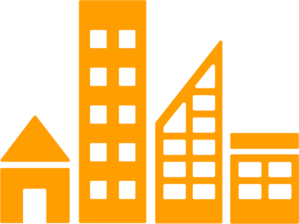

17 objetivos para transformar el mundo
-

1.Fin de la pobreza
Más de 700 millones de personas, el 10% de la población mundial, aún viven en situación de pobreza extrema y luchan por satisfacer las necesidades más básicas tales como la salud, la educación y el acceso al agua y al saneamiento, por citar algunas...
-

2. Hambre cero
Es el momento de repensar cómo crecemos, compartimos y consumimos nuestros alimentos. Si se hace bien, la agricultura, la silvicultura y la pesca pueden proporcionar alimentos nutritivos para todos y generar ingresos decentes...
-

3.Salud y bienesta
Garantizar vidas saludables y promover el bienestar a todas las edades es esencial para el desarrollo sostenible...
-

4.Educación de calidad
La obtención de una educación de calidad es la base para crear un desarrollo sostenible. Además de mejorar la calidad de vida, el acceso a una educación inclusiva puede ayudar a dotar a la población local de las herramientas necesarias para desarrollar soluciones innovadoras a los mayores problemas del mundo...
-
5.Igualdad de género
La igualdad entre los géneros no es únicamente un derecho humano fundamental, sino que es la base necesaria para alcanzar un mundo pacífico, próspero y sostenible. Lamentablemente, actualmente, 1 de cada 5 mujeres entre 15 y 49 años de edad ha experimentado violencia física o sexual...
-

6. Agua limpia y saneamiento
El agua libre de impurezas y accesible para todos es parte esencial del mundo donde queremos vivir. Hay agua dulce suficiente en el planeta para alcanzar este sueño...
-

7.Energía asequible y no contaminante
La energía es fundamental para prácticamente todos los desafíos y oportunidades a los que se enfrenta el mundo actualmente. Ya sea para la ocupación, la seguridad, el cambio climático, la producción de alimentos o para aumentar los ingresos...
-

8.Trabajo decente y crecimiento económico
Aproximadamente la mitad de la población mundial aún vive con el equivalente a unos 2 dólares estadounidenses diarios, con una tasa mundial de desocupación del 5,7% y en muchos lugares el hecho de tener trabajo no garantiza la capacidad para escapar de la pobreza...
-

9.Industria, innovación e infraestructura
Desde hace tiempo se reconoce que para conseguir una economía robusta son necesarias inversiones e infraestructura (transporte, regadío, energía, tecnología de la información y las comunicaciones). Ambas son fundamentales para conseguir un desarrollo sostenible, empoderar a las sociedades de numerosos países, fomentar una mayor estabilidad social y conseguir ciudades más resistentes al cambio climático...
-
10.Reducción de las desigualdades
La comunidad internacional ha alcanzado grandes avances sacando a las personas de la pobreza. Las naciones más vulnerables continúan avanzando en el ámbito de la reducción de la pobreza. Sin embargo, siguen existiendo desigualdades y grandes disparidades en el acceso a los servicios sanitarios y educativos y a otros bienes productivos...
-

11.Ciudades y comunidades sostenibles
Las ciudades son focos de ideas, comercio, cultura, ciencia, productividad, desarrollo social y mucho más. En el mejor de los casos, las ciudades han permitido a las personas progresar social y económicamente...
-
12.Producción y consumo responsables
El consumo y la producción sostenible consisten en fomentar el uso eficiente de los recursos y energía, la construcción de infraestructuras que no estropeen el medio ambiente, la mejora del acceso a los servicios básicos y la creación de puestos de trabajo ecológicos, justamente remunerados y con buenas condiciones laborales...
-

13.Acción por el clima
El cambio climático afecta a todos los países en todos los continentes, produciendo un impacto negativo en su economía, la vida de las personas y las comunidades...
-

14.Vida submarina
Las áreas marinas protegidas tienen que ser administradas de manera efectiva, contar con recursos suficientes y regulaciones que ayuden a reducir la sobrepesca, la contaminación marina y la acidificación de los océanos...
-

15.Vida de ecosistemas terrestres
El 30,7% de la superficie terrestre está cubierta por bosques que además de proporcionar seguridad alimentaria y refugio, son fundamentales para combatir el cambio climático...
-

16.Paz,justicia e instituciones sólidas
Las amenazas de homicidio intencional, la violencia contra los niños, la trata de personas y la violencia sexual, son temas importantes que deben ser tratados para crear sociedades pacíficas e inclusivas...
-
17. Alianzas para lograr los objetivos
Un programa exitoso de desarrollo sostenible requiere de alianzas entre los gobiernos, el sector privado y la sociedad civil...